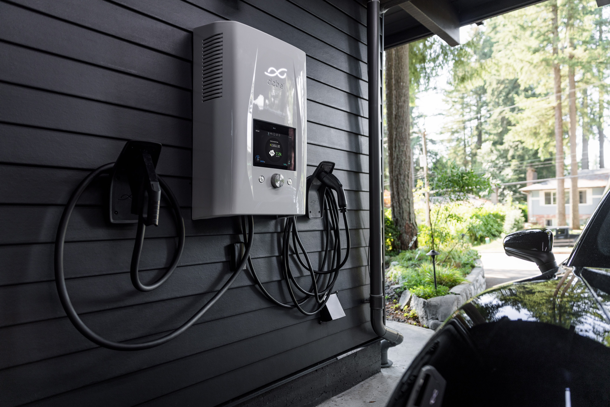

"Environmental Implications of Electric Cars"
The potential environmental impacts of electric cars have been a topic of discussion for quite some time. While they may seem like a cleaner and more sustainable alternative to gas-powered cars, there are still concerns about the environmental impact of the production and reprocessing of the batteries needed to power them. A research paper published in the journal Science by Lester B. Lave, Chris T. Hendrickson, and Francis Clay McMichael, all professors from Carnegie Mellon University, delves into the potential environmental implications of electric cars.
The paper begins by examining the potential benefits of electric cars, such as the ability to shift emissions to less crowded and polluted areas, and the potential to reduce dependence on foreign oil. However, the authors also point out that the production and reprocessing of batteries for electric cars can have harmful environmental effects, such as the release of toxic chemicals during the mining and production of raw materials, and the disposal of batteries at the end of their useful life.
The authors provide a comprehensive analysis of the potential environmental impacts of electric cars, highlighting both the benefits and drawbacks. They use data and research to support their claims, presenting their findings in a straightforward manner. However, the paper does not discuss the social or economic implications of electric cars.
This source helped to answer one of my main questions: What are the environmental impacts of the energy sources used to power electric cars? The paper provides specific information about the environmental impact of the production and reprocessing of batteries needed to power electric cars. It explains the potential harmful effects of these processes, giving me a better understanding of the environmental impact of electric cars.
While the paper does have a potential bias towards promoting sustainable technology, given the authors' expertise in the fields of environmental engineering and economics, they present their findings in an objective manner, using data and research to support their claims.
In conclusion, this research paper provides a valuable analysis of the potential environmental implications of electric cars, specifically focusing on the production and reprocessing of batteries needed to power them. It highlights the potential benefits and drawbacks of electric cars, providing a comprehensive overview of their environmental impact. While it does not discuss the social or economic implications of electric cars, it provides valuable information for researchers, academics, and policymakers interested in the environmental impact of electric cars.

Go Back